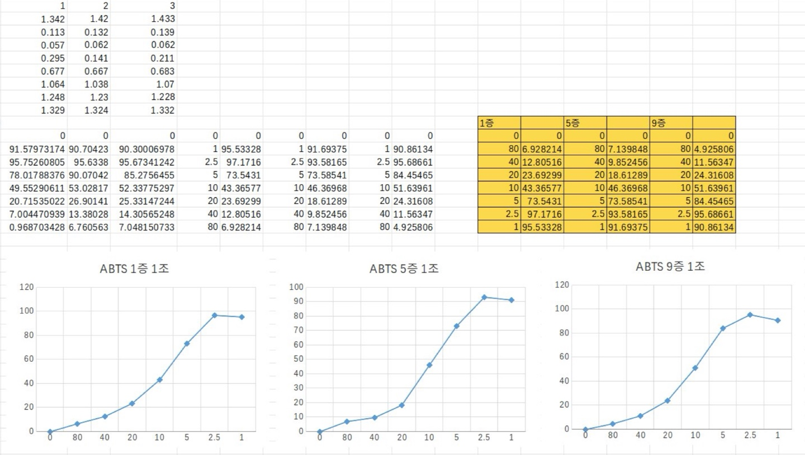
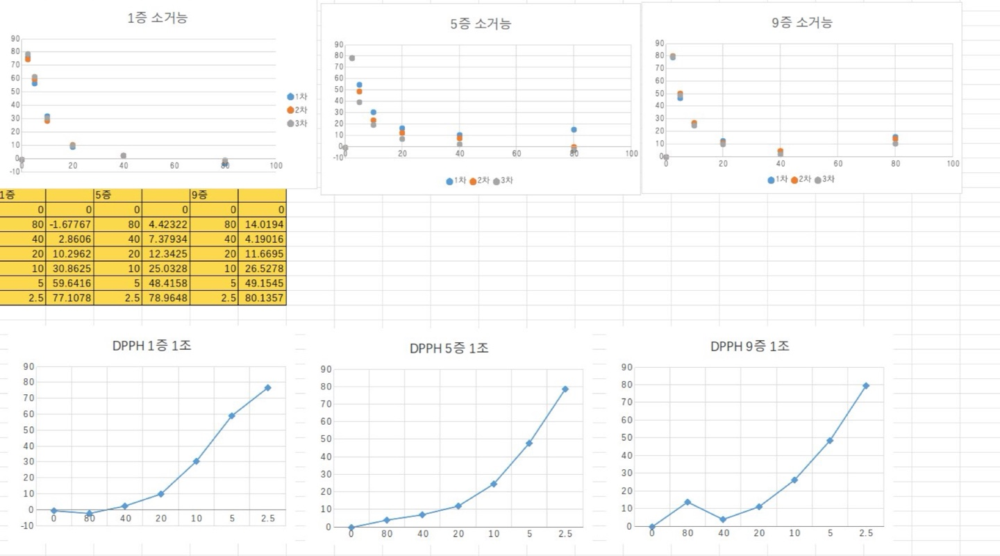

마 실험 결과
마 폴리페놀 정량 결과
| 에탄올 농도|희석배수 |
X8 |
X4 |
X2 |
| 0% |
0.067 |
0.187 |
0.416 |
| 20% |
0.088 |
0.210 |
0.542 |
| 40% |
0.120 |
0.314 |
0.659 |
| 60% |
0.127 |
0.288 |
0.677 |
| 80% |
0.089 |
0.255 |
0.537 |
| 100% |
0.106 |
0.245 |
0.507 |
->에탄올 농도 50%으로 결정
마 증포별 폴리페놀 정량
Garlic acid Standard
| 농도 |
0.015625 |
0.03125 |
0.0625 |
0.125 |
0.25 |
| 흡광도(O.D) |
0.010 |
0.041 |
0.228 |
0.673 |
1.462 |
마 폴리페놀 정량
| 마 증포|농도 |
X2 |
X4 |
X8 |
X16 |
| 1증 1포 |
0.112 |
0.207 |
0.721 |
|
| 5증 5포 |
|
0.436 |
0.160 |
0.069 |
| 9증 9포 |
|
0.399 |
0.161 |
0.073 |
마 증포별 환원력
| 마 증포|희석배수 |
1 |
2.5 |
5 |
10 |
20 |
40 |
80 |
| 1증 |
0.033 |
0.015 |
0.021 |
0.027 |
0.041 |
0.043 |
0.057 |
| 5증 |
0.070 |
0.055 |
0.047 |
0.053 |
0.055 |
0.057 |
0.062 |
| 9증 |
0.041 |
0.044 |
0.042 |
0.047 |
0.052 |
0.055 |
0.057 |
-> 희석배수가 커질수록 흡광도 값이 증가하는 것으로 보아 마의 환원력이 없는 것으로 예측
마 증포별 ABTS 양이온 라디칼 소거능(총 3세트씩 하여 평균값으로 표 만듬)
| 마 증포|희석배수 |
0 |
80 |
40 |
20 |
10 |
5 |
2.5 |
1 |
| 1증 |
1.402 |
1.305 |
1.223 |
1.070 |
0.794 |
0.371 |
0.040 |
0.061 |
| 5증 |
1.407 |
1.306 |
1.268 |
1.146 |
0.754 |
0.371 |
0.089 |
0.017 |
| 9증 |
1.399 |
1.328 |
1.235 |
1.058 |
0.676 |
0.216 |
0.060 |
0.128 |
마 증포별 아질산염 소거능
| 마 증포|희석배수 |
1(원액) |
2.5 |
5 |
10 |
20 |
40 |
80 |
| 1증 |
3.128 |
2.159 |
1.774 |
1.386 |
1.072 |
1.098 |
1.096 |
| 5증 |
3.445 |
2.188 |
1.111 |
1.024 |
1.109 |
1.270 |
1.286 |
| 9증 |
3.441 |
2.328 |
1.321 |
1.338 |
1.128 |
1.378 |
1.513 |
마 증포별 DPPH 소거능(총 3세트씩 하여 평균값으로 표 만듬)
| 마 증포|희석배수 |
0 |
2.5 |
5 |
10 |
20 |
40 |
80 |
| 1증 |
0.691 |
0.161 |
0.282 |
0.483 |
0.627 |
0.679 |
0.711 |
| 5증 |
0.683 |
0.144 |
0.350 |
0.510 |
0.597 |
0.631 |
0.650 |
| 9증 |
0.705 |
0.140 |
0.358 |
0.517 |
0.622 |
0.675 |
0.606 |
| ABTS소거능계산 |
DPPH소거능계산 |
|  |
 |
건조증량
| 마 증포|측정값 |
나중무게 |
원래무게 |
건조증량 |
농도 |
| 1증(1차) |
21.5419g |
21.5369g |
0.005g |
100mg/20mL |
| 1증(2차) |
21.2064g |
21.2009g |
0.0055g |
110mg/20mL |
| 5증(1차) |
21.2122g |
21.2058g |
0.0064g |
128mg/20mL |
| 5증(2차) |
20.4403g |
21.4345g |
0.0058g |
116mg/20mL |
| 9증(1차) |
21.6437g |
21.6373g |
0.0064g |
128mg/20mL |
| 9증(2차) |
21.3925g |
21.3873g |
0.0052g |
104mg/20mL |